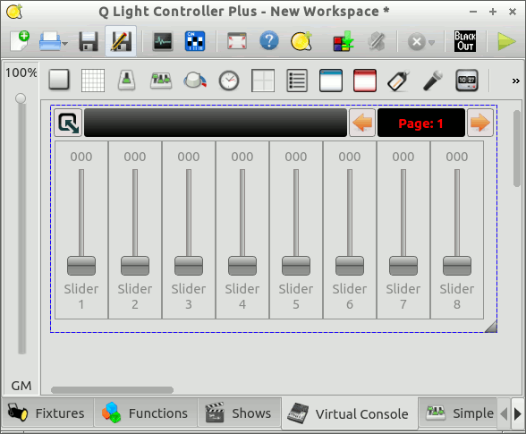

で追加できましたか？次に進みます。
で追加できましたか？次に進みます。このチュートリアルはMIDIコントローラーを用いてフレームのページ機能を操作できるようになろうというものです。 フレームのページ機能を扱えるようになるとごちゃごちゃしがちだったバーチャルコンソールをスッキリと使いやすくすることができます。
今回はMIDIコントローラーとしてBehringer社のBCF2000を使用します。今回使用するBCF2000はフェーダー内部にモーターを備えており、フェダーが自動で動きます。
※: 過去のQLC+ではページ切り替えをMIDIコントローラで操作するためにはMIDIプロファイルを編集する必要があり面倒でした。この問題はすでに修正されています。安心して作業を進めていきましょう。
準備をしていきます、すでにコントロールしたいページ付きのフレームがある場合は準備バッチリなので、ここは飛ばしていきましょう。
まずはプロジェクトデータの初期設定をしていきましょう。今回のフィクスチャーは32台のParライトでやっていきましょう。1ch~32chまで設定しておいてください。今回のMIDIデバイスはBCF2000です、このデバイスには8本のフェダーが付いています。この８本のフェダーにParライトを割り当ててるので全部で4ページ必要ですね。あくまでもチュートリアルなので、３２台もParライトが無いよ！って時も怒らないで、１ページに２台ずつにするとか、DMXモニターで出力だけ確認するとか、いくらでもやりようはあります。
フィクスチャーマネージャーで追加できましたか？次に進みます。
次はバーチャルコンソール を開いてください。
を開いてください。
まずは、新規フレーム を作成します。フレームのプロパティーを開きましょう。"ページタブ"を開きましょう。ページ機能を有効化し、4ページ作成してください。設定が完了したらOKでプロパティーを閉じます。
を作成します。フレームのプロパティーを開きましょう。"ページタブ"を開きましょう。ページ機能を有効化し、4ページ作成してください。設定が完了したらOKでプロパティーを閉じます。
次はスライダーを追加していきます。１ページあたり８本のスライダーを追加してください。この調子で、全てのページに８本のスライダーを追加しましょう。追加し終わったら次に、全てのスライダーチャンネルフェダーにして1~32chを全てのスライダーに順番に設定していきましょう。
設定が終わったら本番モードにして正しく設定できたか確認しておきましょう。
ページの設定をする前にまずフレームの中に８本のスライダーを追加し、そのあとでフレームのプロパティーから１ページめを複製するにチェックを入れて4ページ作成すればもう終わり！あとはちまちま全てのスライダーをチャンネルフェダーにしていけばOK
ではいよいよ外部入力の設定をしていきましょう。
入出力設定を開き、MIDデバイスを正しく認識させましょう。Universe2の入力にMIDI の BCF2000を追加し、フィードバックにもチェックを入れましょう。
次にバーチャルコンソールを開きフレームのプロパティーを開きましょう。ここで、ページの戻しと送りに外部入力を設定しておきましょう。自動検出を使うと楽に設定できますよ。今回はMIDIデバイスのButton 9 Topをページの戻しに、Buton 10 Topをページの送りに設定しておきました。設定が完了したらOKを押しましょう。これでページがMIDIデバイスで操作できるようになりました！どうですか？使えるようになりましたか？
それでは、同じ要領でスライダーにも外部入力を設定していきましょう。全てのページの全てのスライダーが外部入力できるようになりましたか？フィードバックのないコントローラを使っている場合はページ機能を使うと思いもよらない挙動をするかもしれません。
では設定も終わったので、本番モードにして試して見ましょう。どうですか？ページ切り替えに応じてフェダーが勝手に動けば成功です、お疲れ様でした。
ソロフレームでページ機能を使うとページをまたいでソロ再生します。